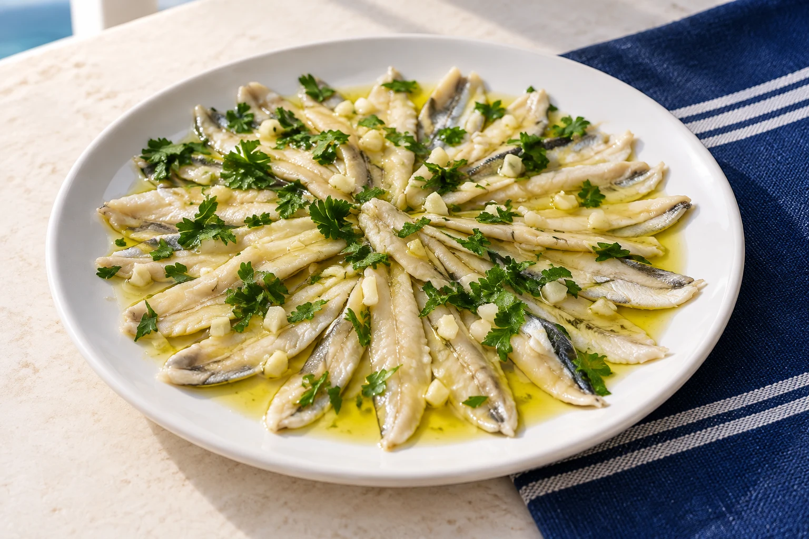

01
Entrantes
Cuando se muestran Precio 1 / Precio 2, la carta no especifica el tamaño: porciones por confirmar. Canasta de pan: 0,70 €.
Mejillones tigre
5 unidades5.00 €10 unidades10.00 €Tortillitas de camarón (5 und)
6.00 €Setas con gambas
10.00 €Gambas al pil pil (14 und)
10.00 €Pulpo a la gallega
14.00 €Anchoas del Cantábrico 0.0 und
2.00 €Patatas bravas
Precio 15.00 €Precio 210.00 €Berenjenas con miel
Precio 15.00 €Precio 210.00 €Croquetas: elegir rabo de toro/puchero
5 unidades6.00 €10 unidades12.00 €Ración patatas fritas
4.00 €
02